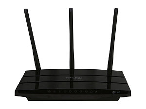
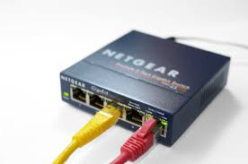
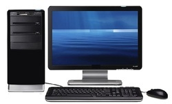
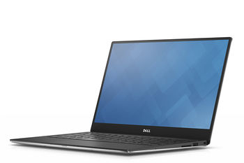
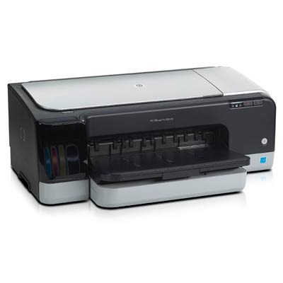

A router egy hálózati eszköz, amely adatcsomagokat továbbít a számítógépes hálózatok között. A routerek látják el a forgalomirányítási funkciókat az interneten. Az interneten keresztül küldött adatok, például weboldalak vagy e-mailek, adatcsomagok formájában vannak. A csomagokat általában az egyik útválasztótól a másik útválasztóhoz továbbítják az internetet alkotó hálózatokon (pl. az interneten) keresztül, amíg el nem éri a célcsomópontot.
Az adatátviteli kapcsoló vagy switch egy aktív számítógépes hálózati eszköz, amely a rácsatlakoztatott eszközök között adatáramlást valósít meg. Többnyire az OSI-modell adatkapcsolati rétegében (2. réteg, esetleg magasabb rétegekben) dolgozik. Magyar jelentése: vált, kapcsol.
A számítógép olyan számítógép, amely nem egy központi számítógép terminálja (munkaállomása), hanem önálló, egyetlen személy (az ún. végfelhasználó) által kezelt, kisebb méretű gép saját billentyűzettel, processzorral, operatív memóriával és monitorral. Létrehozásához a számítógép elektronikájának miniatürizálódása és lényegesen kisebb előállítási költsége volt szükséges, ami a nyomtatott áramkörök és a mikroprocesszorok megjelenésével lett elérhető. Az International Business Machines (IBM) 1981. augusztus 12-én mutatta az első személyi számítógépét.
A notebook és a laptop angol eredetű szó, az informatikában a hordozható személyi számítógépeket takarják. Ezek teljes értékű PC-k, az asztali változatokhoz képest a lényegi különbség a kompakt formai kivitelezésben és a hordozhatóságban rejlik. Ugyanazokat a funkciókat betöltő alkatrészekből épülnek fel, azonban jellemzően kisebb méretűek, könnyebbek, kevesebb hőt termelnek, és kevesebb energiát is fogyasztanak, mint az asztali PC-kben megtalálható megfelelőik. Ezt részben korszerűbb anyagokkal, részben a hordozhatóságot szem előtt tartó tervezéssel és gyártástechnológiával érik el. A notebookok ugyanazokat a szoftvereket futtatják, mint az asztali gépek, így a laptopokra ugyanaz a Windows, Linux vagy OS X alkalmazások telepíthetők. A hordozható számítógépek szinte kivétel nélkül újratölthető akkumulátorral szerelve vásárolhatók meg, amelyek révén több órát is képesek vezetékes elektromos hálózat nélkül üzemelni.
A nyomtató, vagy angolul printer, olyan hardver, kimeneti periféria, mely arra használható, hogy a digitális adatokat megjelenítse látható formában, általában papíron.
